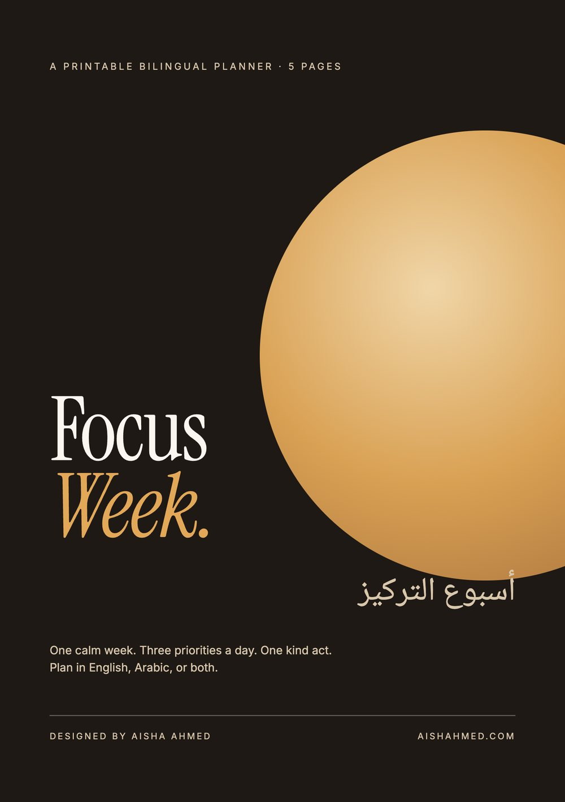
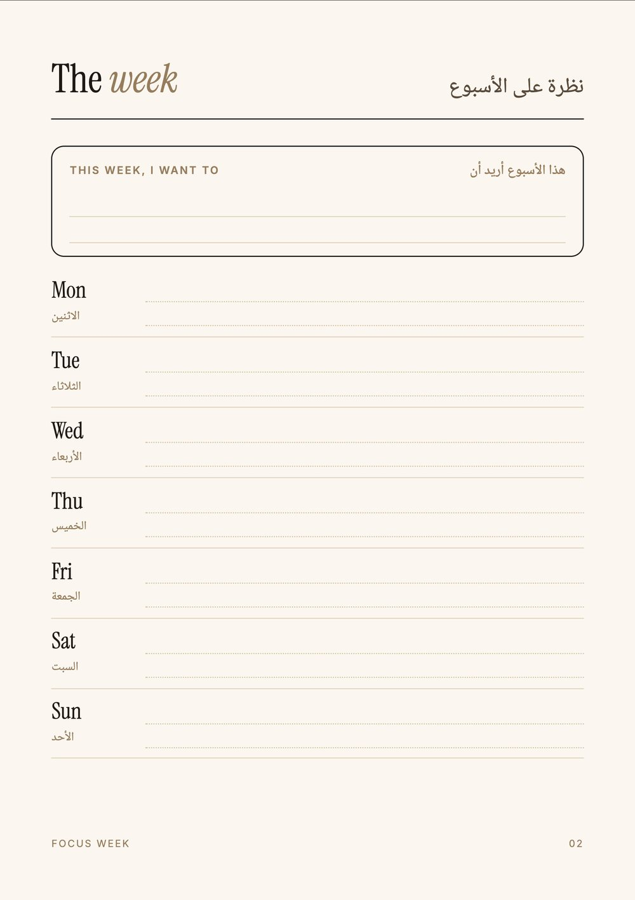
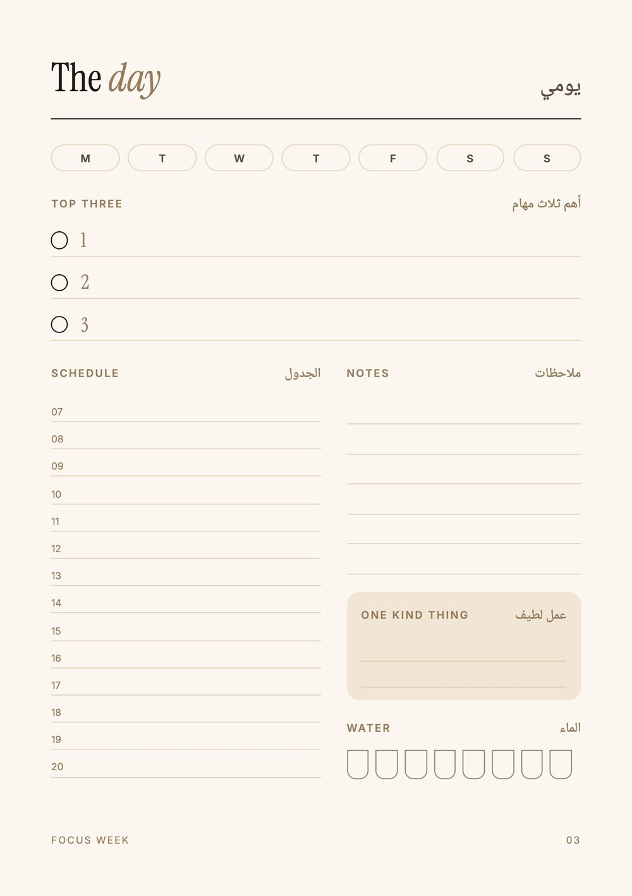
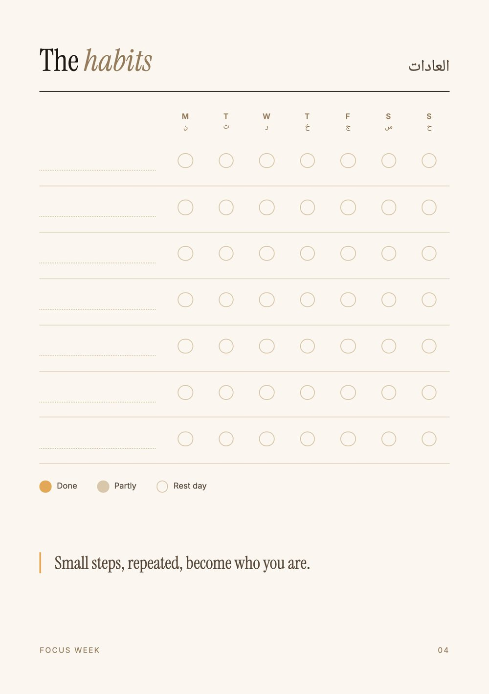
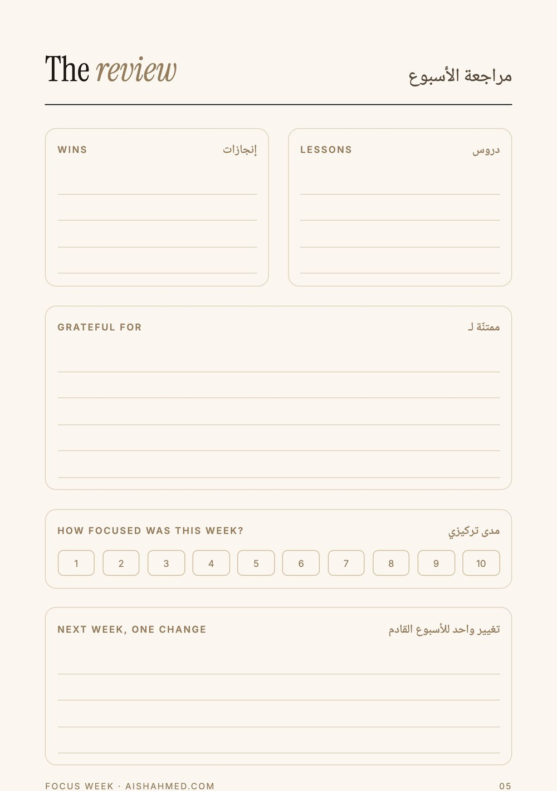

Aisha Ahmed
Aisha Ahmed( Exhibit III · Printable bilingual planner )
Focus Week
A digital product.
أسبوع التركيز

The brief
A simple weekly planner that works for people who think in Arabic, in English, or switch between both in the same sentence. It had to be calm, printable at home, and finished in a weekend.
The approach
- 01
Fewer boxes, more focus
Most planners try to plan everything. This one asks for three priorities a day and one intention for the week, so it gets used past Wednesday.
- 02
Two languages on every label
Every heading carries English on the left and Arabic on the right, so either reader feels at home without a second edition.
- 03
A small human touch
Each day has a space for "one kind thing", a quiet reminder that a good week is not only a productive one.





How I would measure it
As a free download it is a lead magnet: I would track downloads, email sign-ups and which page people share most, to decide what the paid version should include.
Download the planner (PDF) ↓Self-initiated concept. The brand and product are fictional and were created to show my process. Photography generated with AI and art-directed by me; all layout, typography and copy are my own.
Next exhibitThe Organic Way →